Процесс стирания драйвера принтера для возврата конфигурации компьютера к моменту до установки драйвера принтера называется удалением. Чтобы удалить драйвер принтера, выполните следующую процедуру.
1
Если USB-кабель подключен, выключите принтер и компьютер, а затем отсоедините USB-кабель.
2
Включите компьютер, а затем войдите в систему Windows как пользователь с правами администратора.
3
Закройте перечисленные ниже файлы и программы, если они открыты.
Файлы справки
Окно состояния принтера
Панель управления
Другие приложения
4
Запустите программу удаления.
В меню [Пуск] выберите [Все программы] или [Программы] → [Программа удаления принтера Canon] → [Программа удаления принтера Canon LBP6000 LBP6018].
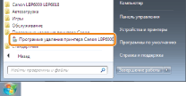
 Если не удается найти программу удаления в меню [Пуск] Если появится диалоговое окно [Контроль учетных записей пользователей] Если не удается найти программу удаления в меню [Пуск] Если появится диалоговое окно [Контроль учетных записей пользователей]Нажмите кнопку [Да] или [Продолжить].
|
 "
"5
Выполните описанную ниже процедуру.
Если этот принтер отображается
|
(1)
|
Выберите данный принтер.
|
|
(2)
|
Щелкните [Удалить].
|
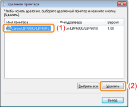
Если этот принтер не отображается
Щелкните [Удалить].
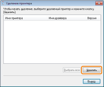
6
Нажмите кнопку [Да].
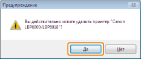
|
→
|
Запускается процесс удаления.
Подождите, пока не исчезнет приведенный ниже экран. (Удаление драйвера принтера может занять длительное время.)
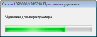
|
|
При появлении указанного ниже экрана щелкните [Да] или ["Да" для всех].
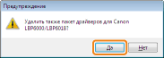
|
7
Щелкните [Выход].
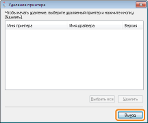
8
Откройте папку принтера.
9
Убедитесь, что значок этого принтера найти не удается.
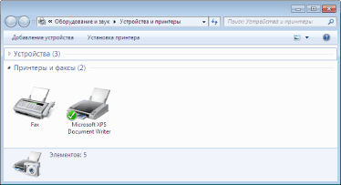
|
ВАЖНО
|
||||
|
Если значок для данного принтера отображается
|
10
Перезапустите Windows.
|
Затем удалите документ "Электронное руководство" с помощью следующей процедуры.
(Если Электронное руководство не установлено, указанные ниже действия выполнять не нужно.) |
11
Вставьте компакт-диск "User Software" из комплекта поставки в дисковод компьютера.

12
Нажмите кнопку [Дополнительные программы].
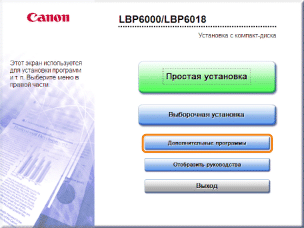
|
Если приведенный выше экран не отображается Если появится диалоговое окно [Автозапуск] Щелкните [Выполнить AUTORUN.EXE].
Если появится диалоговое окно [Контроль учетных записей пользователей]Нажмите кнопку [Да] или [Продолжить].
|
13
Нажмите кнопку [Запуск] в пункте [Программа удаления руководств].
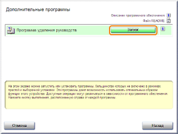
14
Щелкните [Удалить], чтобы начать удаление.
Дождитесь завершения удаления. (Удаление драйвера принтера может занять длительное время.)
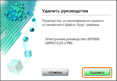
15
Нажмите кнопку [Выход].
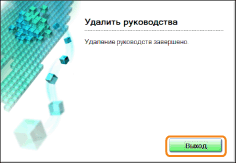
16
Нажмите кнопку [Назад].
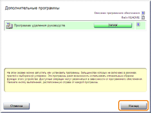
17
Нажмите кнопку [Выход].
 |
Когда появляется приведенный ниже экран, можно извлечь компакт-диск.
|
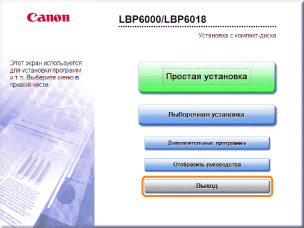